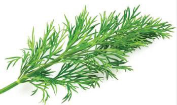
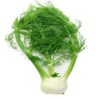
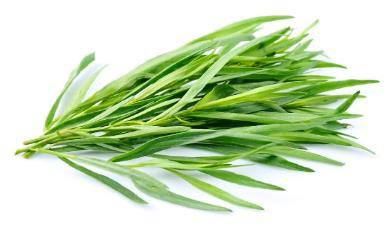

Food and Human Nutrition
Form Two
Type of herb
Description
Dishes

Dill
Leaves
Salad, salad dressing and sauces

Fennel
Leaves
Sauces

Tarragon
leaves
Fish and chicken dishes as well as sauces
Oregano
Stalks and leaves
Soups, sauces, stews, pizzas and salad dressings
Note: Different herbs can be combined with spices and tied together in a muslin cloth to form a bouquet garni. This mixture is then allowed to cook with food and is usually removed before serving. Bouquet garni tends to improve the flavour of food.